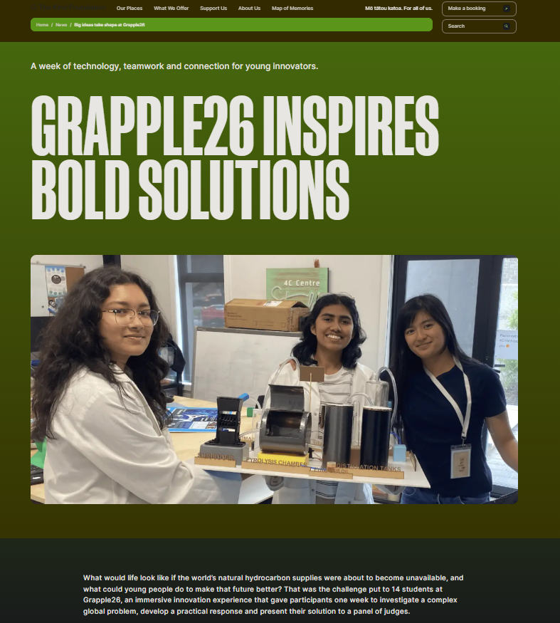

01Innovation / Teamwork / 2026
Grapple26
Plastic waste, medicine, and an unexpected win.
At Grapple26, my three-person team developed a concept for turning plastic waste into medicine. We won against two other teams, each with twice as many members.
It was a pretty memorable reminder that an unusual idea is still worth pursuing.
Read about Grapple26 ↗